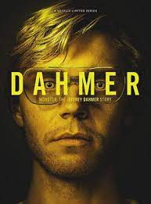
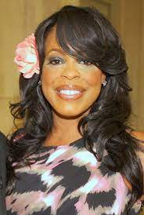
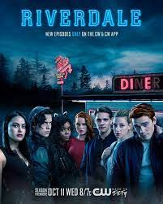
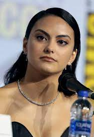
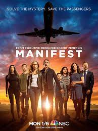

Dahmer: Um Canibal Americano
Por mais de uma década, Jeffrey Dahmer conseguiu matar 17 jovens rapazes sem levantar suspeitas da polícia. Descubra como ele conseguiu evitar a prisão por tanto tempo.
Evan Thomas Peters (Jeffrey Dahmer)
Evan Thomas Peters é um ator norte-americano, mais conhecido por seus dezessete personagens durante nove temporadas na série antológica American Horror Story,

Niecy Nash (Glenda Cleveland)
Carol Denise "Niecy" Nash é uma atriz, humorista, modelo, produtora de televisão e apresentadora de televisão norte-americana.

Riverale
Uma versão subversiva de Archie, Betty, Veronica e seus amigos, explora o surrealismo da vida em uma pequena cidade e mostra a estranheza que se esconde atrás da fachada saudável de Riverdale.

Camila Mendes (Veronica Loge)
Camila Carraro Mendes é uma atriz e cantora norte-americana. Ela é mais conhecida pelos seus papéis como Veronica Lodge em Riverdale, Shelby Pace em O Date Perfeito, Tala em Palm Springs, Katie Franklin em Mentiras Perigosas e Drea Torres em Justiceiras.
Madelaine Grobbelaar Petsch (Cheryl Blossom)
Madelaine Grobbelaar Petsch é uma atriz e Youtuber norte-americana-sul-africana. Ela é mais conhecida pelo público por protagonizar a personagem Cheryl Blossom na série de televisão de "Riverdale".

Manifest
Um avião aterrissa misteriosamente cinco anos depois da decolagem. Assim, os passageiros precisam aprender a lidar com a estranheza de um mundo que seguiu a vida sem eles.

Melissa Roxburgh (Michaela Stone)
Melissa Roxburgh é uma atriz canadense-estadunidense. Ela é conhecida por seus papéis em Diário de um Wimpy Kid: Rodrick Rules e Diário de um Wimpy Kid: Rodrick Rules, como alferes Syl no filme de 2016 Star Trek Beyond e como Olivia Tanis em The Marine 4: Moving Target.

Joshua Paul Dallas (Ben Stone)
Joshua Paul Dallas, conhecido como Josh Dallas, é um ator americano. É mais conhecido por interpretar Fandral na adaptação de 2011 Thor e Príncipe Encantado/David Nolan na série da ABC Once Upon a Time.